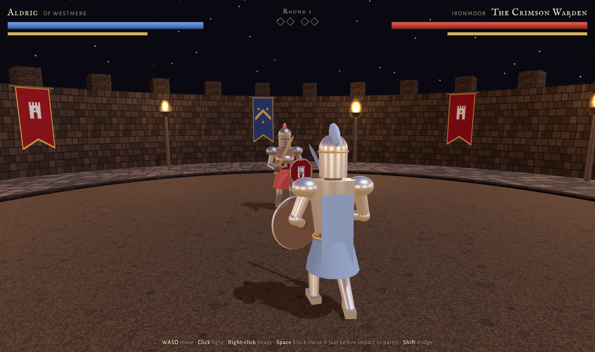

Claude · Original run
Ironmoor Duel
The baseline: automatic facing, chained light cuts, and slow-motion parries against the Crimson Warden.
Four attempts at the same medieval sword duel. Read the brief, compare what each build does, then pick up a blade and decide for yourself.

Keyboard and mouse recommended. All original game files are preserved; the common player makes switching between them easy.
The baseline: automatic facing, chained light cuts, and slow-motion parries against the Crimson Warden.
Manual aim, a three-cut combo, articulated limb IK, and a Verlet ragdoll against Varkos, the Ashen King.
Independent mouse aim, directional shield defense, and a patient Warden who closes in on a missed heavy.
A separate Codex attempt: a kite shield, guarding-sword collision, and heavy feints against the Hollow Warden.
Implemented features and recorded validation, side by side. No published head-to-head gameplay scores yet.
| WHAT DIFFERS | Ironmoor Duel | Ashen Crown | Cinder Oath | Iron Vigil |
|---|---|---|---|---|
| Aiming | Automatic facing / lock-on | Mouse aim; optional Q lock-on | Mouse aim, independent movement | Mouse aim; optional Q lock-on |
| Combat emphasis | Chained light cuts; heavy poise; feints | Three-cut combo; ripostes; heavy feints | Directional shield; guard breaks; sustained baiting | Kite shield; guarding sword; heavy feints |
| Blade collision | Traced from actual blade positions | Swept blade vs. live capsules and shield | Swept blade vs. capsules, shield disc, active blades | Swept blade vs. capsules, kite shield, guarding sword |
| Death animation | Topple; sword clatters away | Verlet ragdoll; dropped sword | Damped articulated fall | Procedural topple |
| Recorded checks | Headless smoke test reported One overlay fix | Headless checks reported Two model-authored fixes | 27 browser checks Combat/state + 60-second simulation | 18 simulation checks Real Three.js; renderer/DOM stubbed |
| Comparable play score | Not recorded | Not recorded | Not recorded | Not recorded |
Test counts are not a leaderboard. The builds used different test suites. Comparable FPS, latency, generation time, cost, and human play scores were not recorded. Features above describe the implementations, not proof that one model performs better. The two Codex entries are distinct runs; exact underlying model versions were not recorded.
One HTML file. No supplied game assets. A duel that has to work in motion, not just look convincing in a screenshot.
Give this brief unchanged to a model in a fresh session. The original Claude run proposed the brief; later builds reuse it.
Read the full provenance ↗Build a single-file HTML 3D medieval sword duel using Three.js (from a CDN). No external assets: build all models from primitives and animate them procedurally. - Player knight vs. AI knight in a torch-lit arena with dynamic shadows - Controls: WASD to move, mouse to aim, left click for a light attack, right click for a heavy attack, Space to block, Shift to dodge - Stamina system: attacks, blocks and dodges cost stamina, and a well-timed block **parries** and staggers the opponent - Hit detection based on where the sword actually is, not a distance check - The AI reads your stance, baits you, and punishes whiffed heavies - Game feel: hit-stop, camera shake, sparks on clashes, a ragdoll-ish death - Health and stamina bars, a round system, and a restart screen
Use the same device and conditions for each run. Score each check from 0 (missing or broken) to 2 (solid). This site does not assign winners. See the original rubric and all build notes →